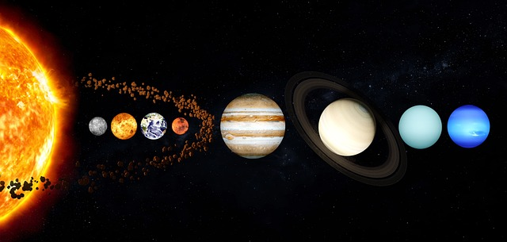

Solar Planet systems

Mars Rovers:
Spirit and Opportunity (2004): These twin rovers explored Mars, analyzing rocks and soil to understand the planet's geological history. Spirit operated until 2010, and Opportunity until 2018. Curiosity (2012): This car-sized rover continues to explore Mars, investigating the planet's climate.

Pioneer 1 (1958):
Objective: The first mission in the Pioneer program, Pioneer 1 aimed to study cosmic rays, solar wind, magnetic fields, and lunar phenomena. Achievements: While it missed the Moon, Pioneer 1 provided valuable data on cosmic radiation and contributed to the understanding of Earth's radiation belts.

New Horizons and Kuiper Belt
The New Horizons mission, spearheaded by NASA, aimed to explore the mysterious Kuiper Belt, an expansive region of the solar system beyond Neptune. Let's delve into the significance & its exploration: Primary Objective: Launched in 2006, with a primary mission to study Pluto.

Asteroids and comets
Asteroids and cometare celestial bodies in our solar system. Asteroids are rocky, airless remnants left over from the early formation of the solar system, primarily found in the asteroid belt between Mars and Jupiter. Comets, on the other hand, are icy bodies with a nucleus of frozen gases.
Planets
Halley's Comet is one of the most famous comets and is visible from Earth approximately every 76 years. Named after astronomer Edmond Halley, who predicted its return, the last time it was visible was in 1986, and it's expected to return in 2061. Halley's Comet has been observed.
Planet Fact
One intriguing feature of our solar system is the Kuiper Belt. Beyond the orbit of Neptune, the Kuiper Belt is a region filled with small, icy bodies, including dwarf planets like Pluto. It's a sort of "second asteroid belt" but with icy objects. This region provides clues about the early solar system and contains objects that have remained relatively unchanged since their formation. Studying the Kuiper Belt helps scientists understand more about the outer solar system and the processes that shaped its current state.